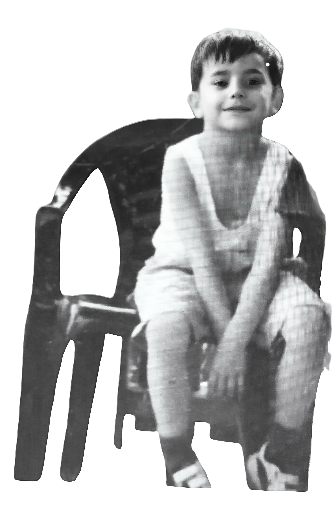
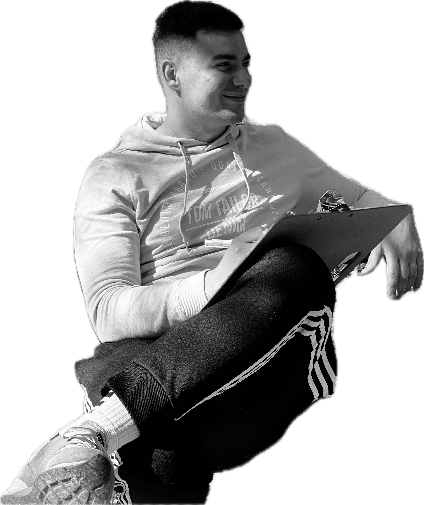

I was born and raised in a small town in central Bosnia, where I completed my primary and secondary education. I first encountered the term “geodesy” in 2015, and from that moment on, I knew I wanted to pursue a career in the field.

I was born and raised in a small town in central Bosnia, where I completed my primary and secondary education. I first encountered the term “geodesy” in 2015, and from that moment on, I knew I wanted to pursue a career in the field.


I hold a Bachelor’s degree in Geodesy and Geoinformatics from the University of Split. I am currently pursuing a Master’s degree in Applied Geoinformatics at the University of Salzburg, with a focus on offshore hydrography.